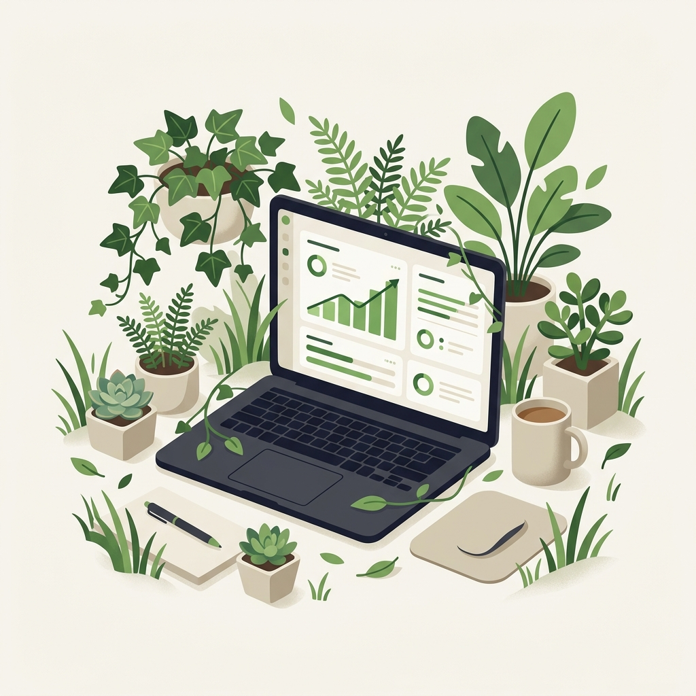
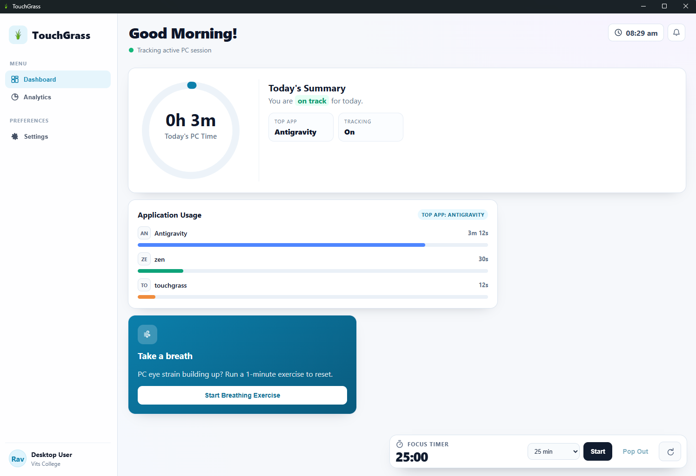
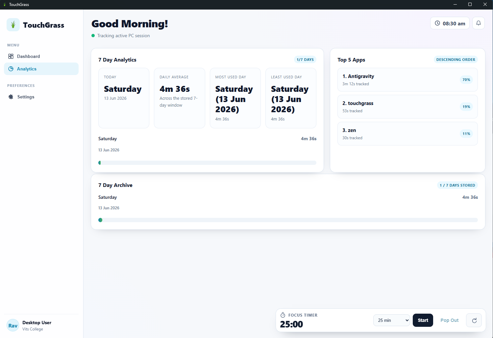
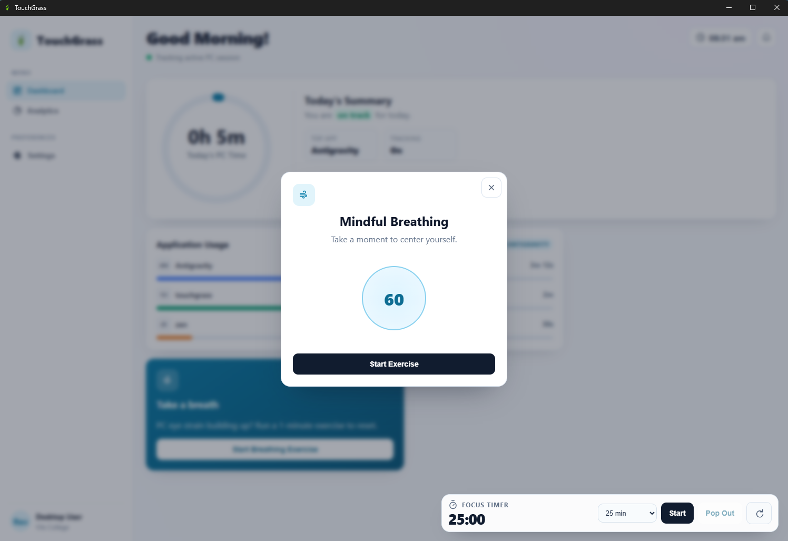
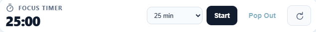
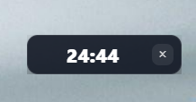
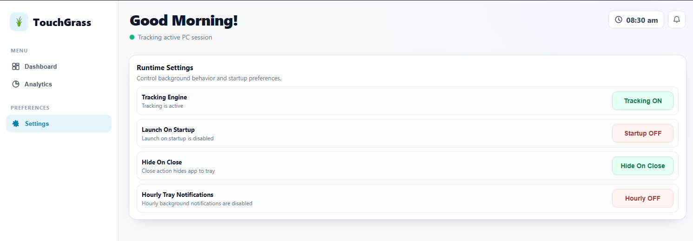

App Usage Tracking
See exactly which apps eat your time. Real-time tracking with beautiful daily and weekly charts — no manual logging needed.
TouchGrass tracks which apps you use and for how long, helps you focus with a Pomodoro timer, and unwind with breathing exercises and ambient sounds — all in one beautiful, free app.

Four powerful tools working together to help you build healthier digital habits — without the guilt trips.
See exactly which apps eat your time. Real-time tracking with beautiful daily and weekly charts — no manual logging needed.
Pomodoro-style timer that keeps you locked in. Customize work and break durations to match your natural rhythm.
Guided breathing sessions to calm your mind between work blocks. Inhale, hold, exhale — feel the tension melt away.
Built-in ambient soundscapes — rain, forest, lo-fi — to create the perfect focus atmosphere. No extra apps needed.
A clean, distraction-free interface that puts your wellbeing front and center. Click any screenshot to zoom in.

See your daily screen time at a glance with real-time app tracking and usage bars.

Dive into 7-day usage trends, daily averages, and your top 5 most-used apps.

Guided 60-second breathing sessions to help you relax and reset between work blocks.

Pomodoro-style timer with customizable durations — docked or popped out to stay on top.

Pop the timer out into a draggable, always-on-top widget while you work.

Control tracking, startup behavior, system tray options, and notifications.
No accounts, no subscriptions, no nonsense. Just download, install, and start understanding your habits.
Grab the lightweight .exe installer from GitHub. One click, zero bloat — installs in seconds.
Open the app and it starts tracking automatically. Sits quietly in your system tray, never in the way.
View real-time usage analytics, start focus sessions, and discover where your time really goes.
Take the first step toward healthier screen time. It's free, it's open source, and it takes less than a minute to set up.
Download for Windows